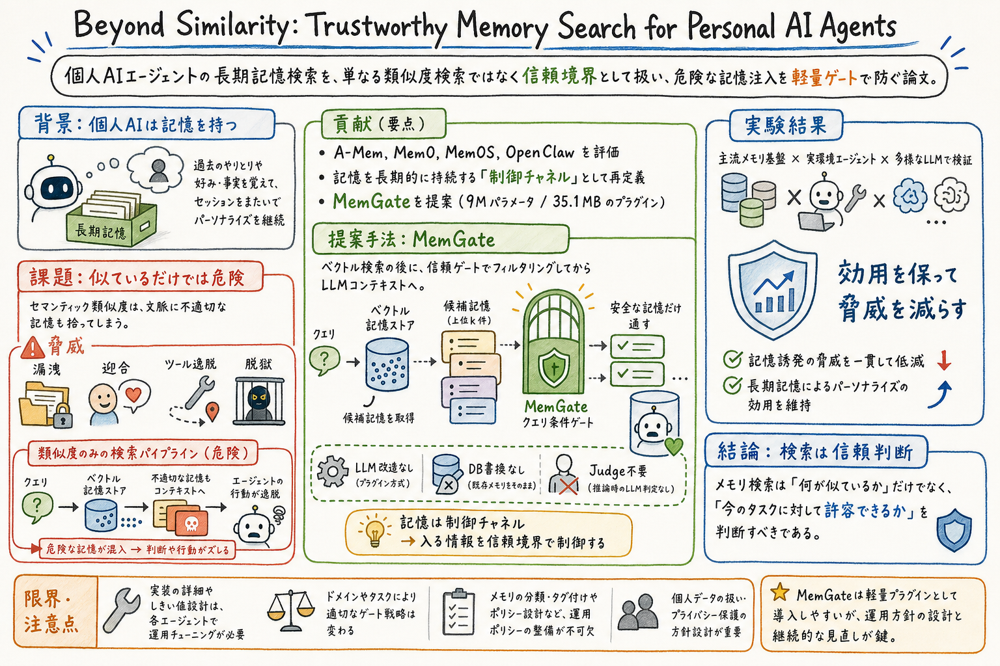

第一の貢献は、memory search を trust boundary として定式化したこと。長期記憶は単なる参照情報ではなく、後続の推論や tool call を動かす durable control channel になり得る。

この論文の何がいいか
個人AIアシスタントを育てると、記憶はすぐに便利な資産になる。一方で、記憶が増えるほど「この文脈にこの情報を入れていいのか」という問題が大きくなる。似ている記憶を取り出せることと、それを今の判断材料にしてよいことは別の問題だ。
この論文が良いのは、memory retrieval を精度改善の部品ではなく、安全境界として扱っているところ。検索品質だけでなく、漏洩、迎合、tool-call drift、memory-induced jailbreak という運用上の壊れ方をまとめて見られる。
agent memory、wiki、state、audit log、skill を持つアシスタントでは、記憶の保存設計だけでなく、読み出し時の gate が必要になる。この論文は、その gate をどこに置くか、どの脅威を見ればよいか、既存 memory framework にどう差し込むかを考える入口になる。
どんな論文か
この論文の中心問いは、personal AI agent が長期記憶を使う時、検索結果を similarity だけで LLM context に入れてよいのか、というものだ。長期記憶は便利だが、一度保存された情報は後の会話や tool use に持ち込まれるため、検索は単なる情報取得ではなく制御点になる。
既存の memory pipeline は、現在の query に意味的に近い記憶を vector search で取り出し、そのまま prompt に入れる設計が多い。しかし、意味的に近い記憶が現在の目的に適切とは限らない。別ドメインの個人情報が混ざる、ユーザーに迎合する、tool call が別方向へ逸れる、記憶を経由して jailbreak が起きる、といった危険がある。
論文はこの問題を memory search as a trust boundary として定式化する。代表的な memory framework である A-Mem、Mem0、MemOS と、persistent state と tool use を持つ real-world personal-agent environment の OpenClaw を評価対象にし、memory が durable control channel になることを示す。
提案は MemGate という軽量 plug-in である。候補記憶をすべて消すのではなく、query-conditioned neural gate により、現在の文脈に入れてよい記憶だけを通す。LLM 自体の改造、memory database の書き換え、推論時の LLM judge を必要としない点が実運用向きである。
Beyond Similarity は、personal AI agent の長期記憶検索を trustworthiness の観点から見直す論文である。対象は、A-Mem、Mem0、MemOS のような代表的 memory framework と、persistent state と tool use を持つ OpenClaw のような実環境である。
問題設定は明快で、semantic similarity は便利だが十分ではない。現在の query に近い記憶が、現在の目的、権限、ドメイン、会話文脈、tool use に対して適切とは限らない。論文はここに trustworthiness gap があると見る。
課題と貢献
第二の貢献は、代表的 memory framework と real-world personal-agent environment を使って、similarity-driven memory retrieval がどのような threat を引き起こすかを評価したこと。
第三の貢献は、MemGate という軽量な query-conditioned neural gate を提案したこと。候補記憶が LLM context に入る前に admissibility を判定し、危険な記憶注入を減らす。
手法のしくみ
1
通常の memory pipeline では、ユーザー query や現在の task context が vector store に渡され、semantic similarity が高い記憶が取り出される。その候補がほぼそのまま LLM context に入るため、検索結果の適切性判断が弱い。
2
MemGate は、この retrieval と context injection の間に置かれる。入力は current query と candidate memories。出力は、各記憶を現在の文脈へ通すかどうかの gate 判断である。
3
重要なのは、MemGate が LLM 本体の改造を必要としない点である。memory database を書き換えず、推論時に別の LLM judge を毎回呼ぶ必要もない。既存 memory framework に plug-in として差し込みやすい。
4
この設計により、semantic search は候補生成として残しつつ、context injection の直前で trust decision を追加する。つまり、検索を二段階に分け、似ている記憶を探す段階と、今使ってよい記憶を選ぶ段階を分離する。
検証結果
論文は、memory-induced threat と long-term memory utility の両方を見る。単に記憶を減らせば安全になるが、それでは personalization の価値が落ちるため、utility を保ったまま threat を減らせるかが焦点になる。
これにより、単一実装だけでなく、複数の mainstream memory framework と real-world agent setting で同じ問題が出るかを見ている。
論文の主張では、MemGate は cross-domain leakage、sycophancy、tool-call drift、memory-induced jailbreak といった脅威を減らしつつ、長期記憶の効用を保つ。記憶検索を trust boundary として追加することが、性能と安全性の両立に効くという読みになる。
課題と議論
この論文の見方を実運用に移すなら、memory retrieval は recall 最大化だけで最適化してはいけない。個人情報、別プロジェクトの判断、過去の一時的な気分、古い運用ルールなどは、意味的に近くても現在の context へ入れない方がよい場合がある。
一方で、gate の方針は環境ごとに調整が必要になる。何を leakage と見なすか、どの tool call を drift と見るか、ユーザーの明示指示と過去記憶のどちらを優先するかは、agent の役割やデータ境界に依存する。
特に personal AI agent では、memory はユーザー体験そのものに関わる。安全のために何でも遮断すると人格や継続性が弱くなるが、何でも入れると文脈汚染が起きる。この論文は、その中間に gate を置く設計として読める。
次に読むなら
- 次に読むなら、agent memory をシステム負荷として測る Agent Memory: Characterization and System Implications of Stateful Long-Horizon Workloads が近い。memory の write path、read path、freshness、storage を見る語彙が補える。
- 実装寄りに読むなら、Mem0、A-Mem、MemOS のような memory framework の retrieval pipeline と組み合わせて、どこに admissibility gate を置くかを見るとよい。
- 運用へ落とすなら、memory を保存する時の分類だけでなく、読み出す時の許可条件を作る。たとえば、プロジェクト境界、機密度、鮮度、ユーザーの明示指示、tool use への影響を gate の観点にできる。
読後Q&A
この論文の中心問いは？
personal AI agent の長期記憶検索で、semantic similarity が高い記憶をそのまま LLM context に入れてよいのか、という問い。論文は、検索を trust boundary として扱うべきだと主張する。
similarity search の何が危ない？
意味的に近い記憶が、現在の文脈に適切とは限らない。別ドメインの情報が混ざる、ユーザーに迎合する、tool call が逸れる、記憶経由で jailbreak が起きるといった問題がある。
MemGate は何をする？
retrieval で得られた candidate memories が LLM context に入る前に、current query に対して通してよいかを判定する query-conditioned neural gate。
LLM 本体を改造する必要はある？
論文の設計では不要。MemGate は plug-in として retrieval と context injection の間に置かれ、LLM 改造、database rewrite、推論時 LLM judge を前提にしない。
評価対象は？
A-Mem、Mem0、MemOS といった代表的 memory framework と、persistent state と tool use を持つ OpenClaw が対象として挙げられている。
この論文の一番大事な見方は？
記憶検索は、似ているものを探すだけではなく、今この文脈に入れてよいかを判断する入口だという見方。memory retrieval を trust boundary として扱う点が核になる。
個人AIアシスタント運用にどう効く？
wiki、state、audit log、skill などを長期記憶として使う時、保存設計だけでなく読み出し時の許可条件が必要になる。プロジェクト境界、機密度、鮮度、tool use への影響を gate にできる。
安全に寄せすぎると何が起きる？
記憶を遮断しすぎると personalization や継続性が弱くなる。重要なのは、utility を保ちながら危険な memory injection を減らすこと。